Klik
Le tempo de référence pour le groupe, avant chaque morceau. Avec la setlist de chaque concert, à partager.
The reference tempo for the band, before every song. With a setlist for each gig, ready to share.
La vidéo (4 min, avec le son) montre tout ce qui suit. Il faut du réseau pour la regarder ; le reste de cette page marche aussi hors-ligne.
The video (4 min, with sound, on-screen text in French) shows everything below. It needs a connection; the rest of this page also works offline.
Vidéo de présentation : klik.lonoize.com/guide.html
Video walkthrough: klik.lonoize.com/guide.html
Le tempo
La référence, avant chaque morceau.
Un toucher sur ▶
Klik donne le tempo de référence : on écoute, on compte, on joue.
Le temps 1 fait flasher tout le cercle. Toucher le chiffre lance et arrête aussi. Au premier lancement, des exemples sont déjà prêts, comme ce « Rock droit ».
Plus vite, moins vite
Maintiens TAP et glisse : à droite plus vite, à gauche moins vite.
Plus on pousse loin, plus le tempo change vite. En paysage, la barre est verticale : on monte pour accélérer.
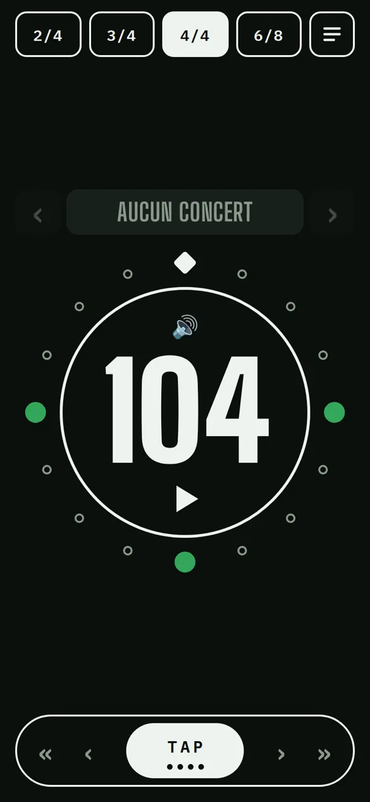
Ou tape le tempo
Quatre fois sur TAP, en rythme : les quatre points s'allument et le tempo est pris.
Deux touchers sur le chiffre permettent aussi de taper le tempo au clavier.
Les accents
Le rythme du morceau, pas seulement les temps.
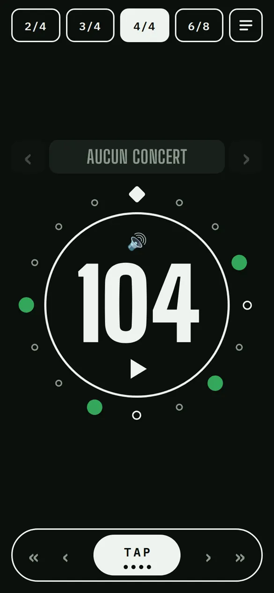
Chaque point, un coup
Chaque point autour du cercle est une double-croche de la mesure. Touche-le pour changer son accent : rien → moyen → fort. Ici, le rythme de Dancing Queen.
En haut, 2/4 · 3/4 · 4/4 · 6/8 : choisir une mesure remet le motif à ses seuls temps. C'est le point de départ idéal pour dessiner le sien.
- Temps 1 (grave)
- Fort
- Moyen
- Rien
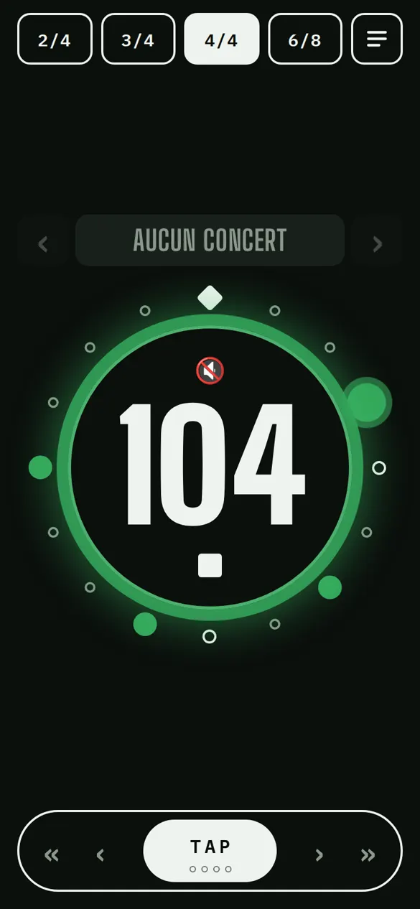
Muet ? Ça flashe
🔊 coupe le son. Le flash continue : on voit le tempo sans l'entendre.
Ta setlist
Les morceaux du concert, dans l'ordre.
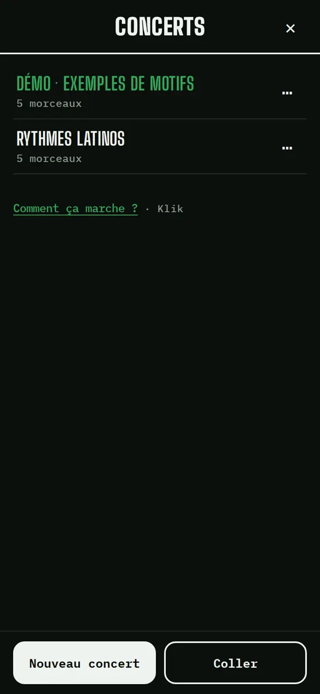
Un concert
☰ ouvre le concert en cours ; ‹ montre tous les concerts. Deux concerts d'exemple sont déjà là.
« Nouveau concert », un nom, et c'est créé.
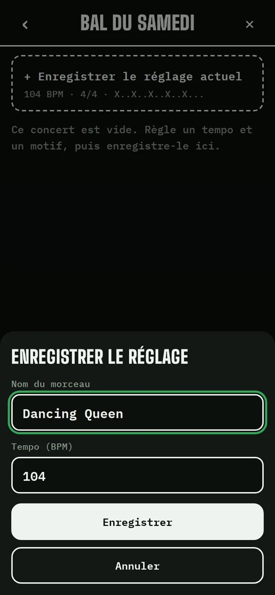
On enregistre
« + Enregistrer le réglage actuel » : le tempo, la mesure et le rythme deviennent un morceau du concert.
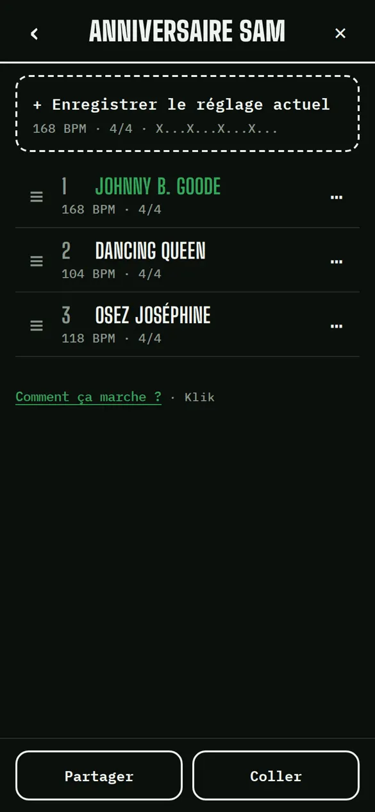
Dans l'ordre
Glisse ≡ pour réordonner. ⋯ pour renommer, changer le tempo, copier ou supprimer un morceau.
Un morceau reçu par lien s'ajoute avec « Coller ».

Sur scène
Touche un morceau, puis ‹ › pour passer au précédent ou au suivant : le tempo et le rythme changent d'un toucher, même pendant la lecture.
Toucher le titre rouvre la liste.
Partager
La setlist pour tout le groupe.
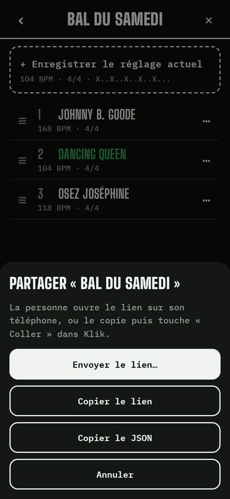
Tout le concert dans un lien
« Partager » puis « Envoyer le lien… » : par WhatsApp, SMS ou mail. « Copier le lien » le met dans le presse-papier.
Toute la setlist est dans le lien : pas de compte, pas de serveur.
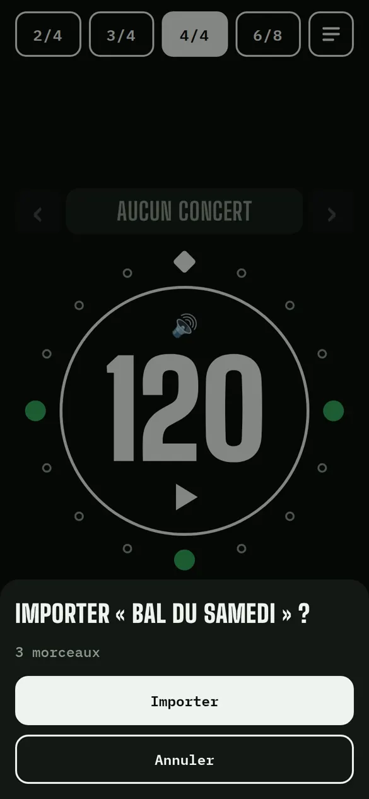
Le groupe l'ouvre
La personne touche le lien : Klik propose d'importer le concert. Ça marche ensuite hors-ligne.
Sur iPhone, un lien s'ouvre dans Safari et pas dans l'app installée sur l'écran d'accueil : mieux vaut copier le lien et toucher « Coller » dans l'app.
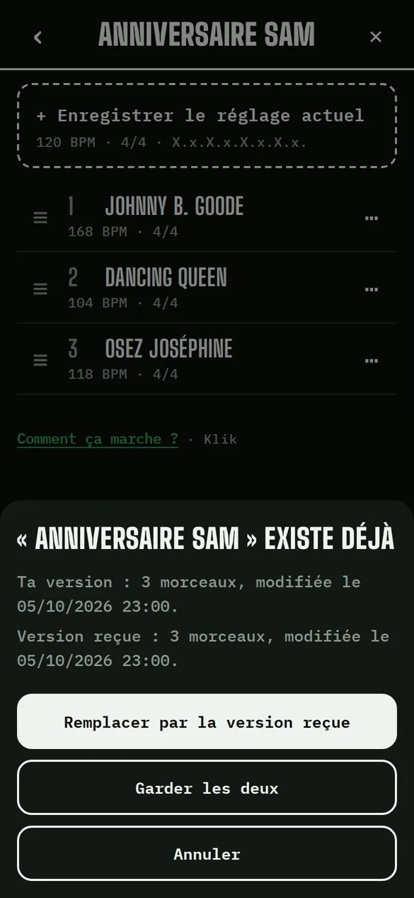
Une modif ? On renvoie
Après un changement, on renvoie le lien. Klik reconnaît le concert et propose de le remplacer par la version reçue, ou de garder les deux.
Dans ⋯ du concert, « Revenir à la version précédente » annule le remplacement.
Tempo
The reference, before every song.
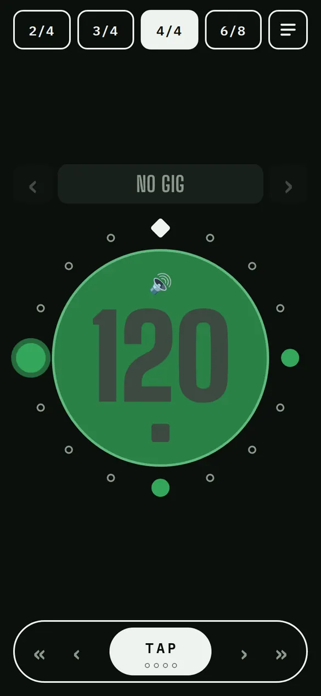
One tap on ▶
Klik gives the reference tempo: listen, count in, play.
Beat 1 flashes the whole circle. Tapping the number also starts and stops. On first launch, examples are ready to play, like this “Straight rock”.
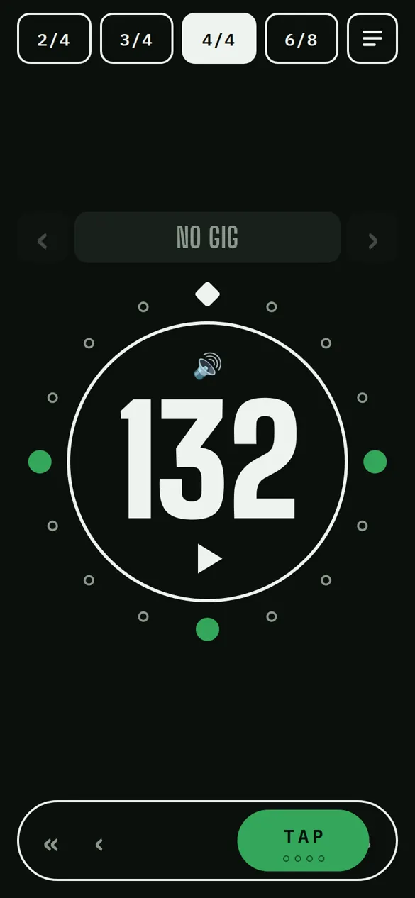
Faster, slower
Hold TAP and slide: right for faster, left for slower.
The further you push, the quicker it changes. In landscape the bar is vertical: slide up to speed up.
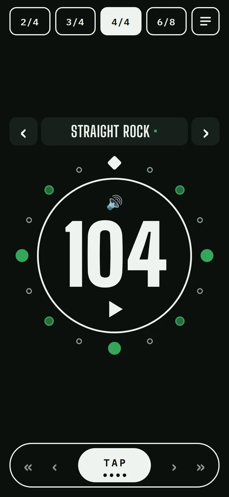
Or tap it
Four taps on TAP, in time: the four dots light up and the tempo is set.
Double-tap the number to type the tempo instead.
Accents
The song's rhythm, not just the beats.
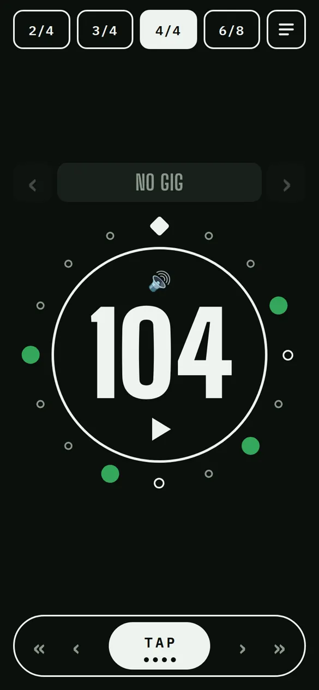
Each dot is a hit
Each dot around the circle is a sixteenth note of the bar. Tap it to change its accent: none → medium → strong. Here, the Dancing Queen rhythm.
At the top, 2/4 · 3/4 · 4/4 · 6/8: picking a time signature resets the pattern to the beats only. A good starting point for drawing your own.
- Beat 1 (low)
- Strong
- Medium
- None
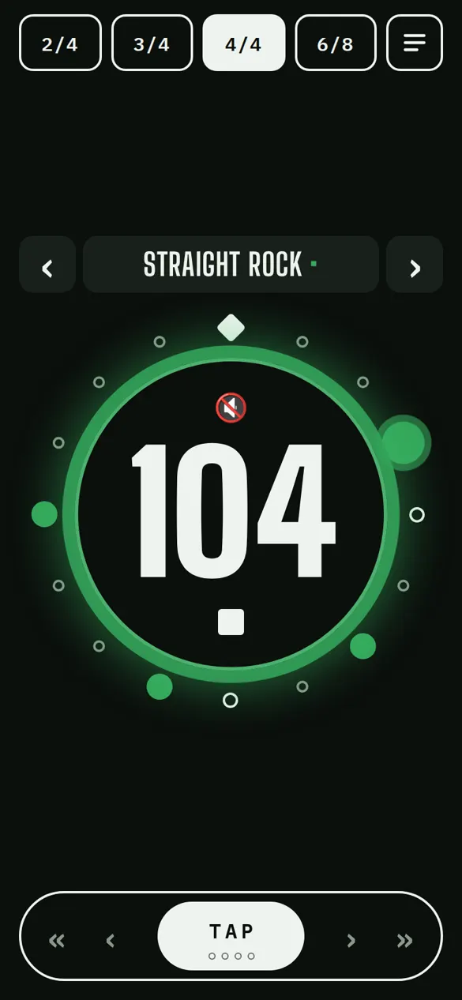
Muted? It still flashes
🔊 mutes the sound. The flash keeps going: you see the tempo without hearing it.
Your setlist
The songs of the gig, in order.
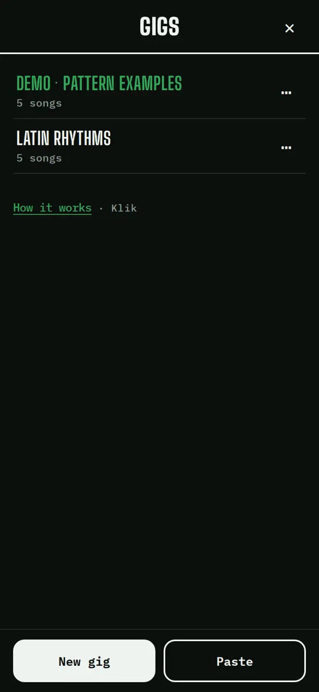
A gig
☰ opens the current gig; ‹ shows all gigs. Two example gigs are already there.
“New gig”, a name, done.
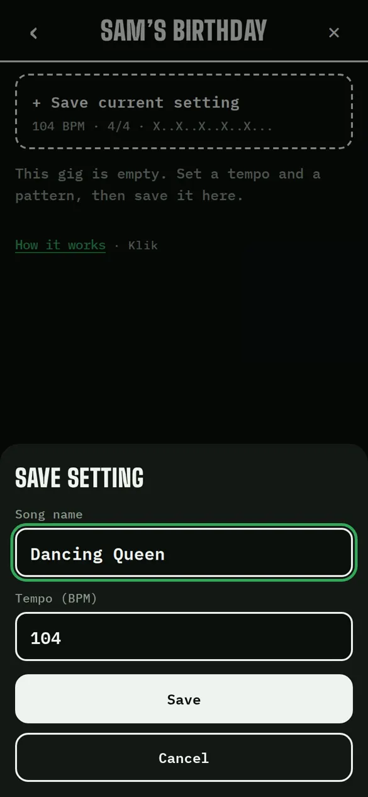
Save the setting
“+ Save current setting”: tempo, time signature and rhythm become a song of the gig.
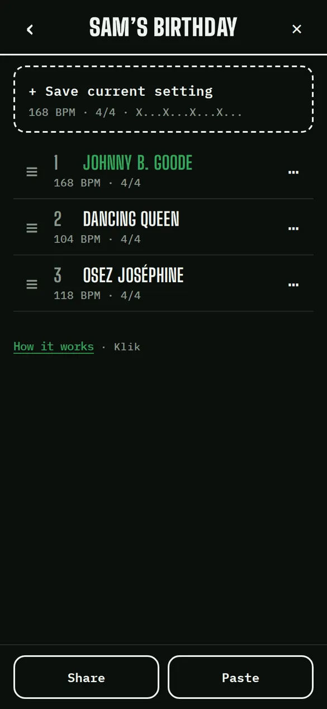
In order
Drag ≡ to reorder. ⋯ to rename a song, change its tempo, copy or delete it.
A song received as a link is added with “Paste”.
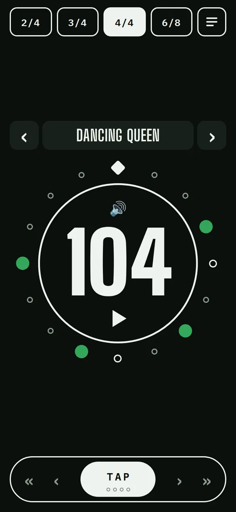
On stage
Tap a song, then ‹ › for the previous or next one: tempo and rhythm change in one tap, even while playing.
Tapping the title opens the list again.
Sharing
The setlist for the whole band.
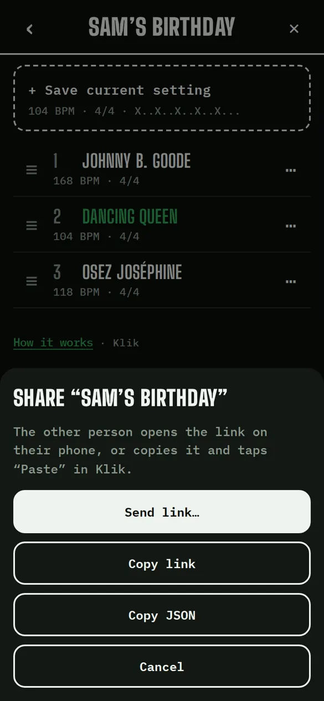
The whole gig in one link
“Share”, then “Send link…”: by WhatsApp, text message or email. “Copy link” puts it on the clipboard.
The whole setlist is inside the link: no account, no server.
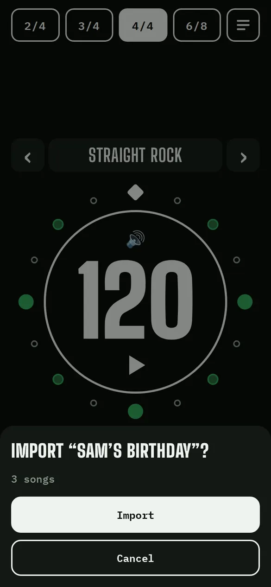
The band opens it
They tap the link and Klik offers to import the gig. It then works offline.
On iPhone, a link opens in Safari, not in the app installed on the home screen: better copy the link and tap “Paste” in the app.
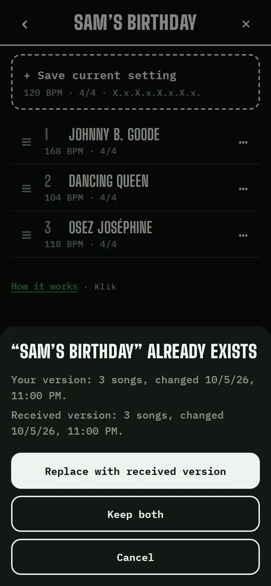
A change? Send it again
After a change, send the link again. Klik recognises the gig and offers to replace it with the received version, or to keep both.
In the gig's ⋯ menu, “Restore previous version” undoes the replacement.